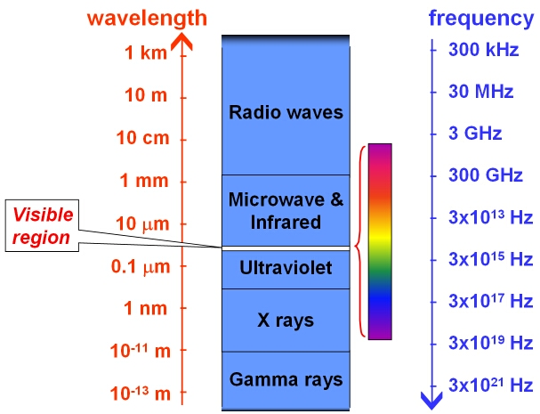
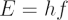
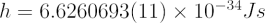

The electromagnetic spectrum (EMS) is the general name given to the known range of electromagnetic radiation. Wavelengths increase from approximately 10-18 m to 100 km, and this corresponds to frequencies decreasing from 3 × 1026 Hz to 3 ×103 Hz.
Interactive: Explore the electromagnetic spectrum — click any wavelength to see which astronomical objects emit there and which telescopes observe it. Open fullscreen.
The image below shows the names given to different regions of the EMS. Note that the visible part of the spectrum, the only type of electromagnetic radiation that we can detect with our eyes, makes up only a tiny fraction of the EMS.

In a vacuum, all electromagnetic waves travel at the speed of light: c = 299,792,458 m/s. An energy ( E ) can be associated with each region of the EMS using the equation:

where f is the frequency and h is Planck’s constant which has the value:

The table below lists typical wavelengths, frequencies and energies for different regions of the EMS.
| Region | Wavelength | Frequency | Energy |
|---|---|---|---|
| Hard gamma | 1 × 10-9 nm | 3 × 1026 Hz | 1.2 × 1012 eV |
| Gamma | 1 × 10-6 nm | 3 × 1023 Hz | 1.2 GeV |
| Gamma/X-ray | 0.001 nm | 3 × 1019 Hz | 12 MeV |
| X-ray | 1 nm | 3 × 1017 Hz | 120 keV |
| X-ray/Ultraviolet | 10 nm | 3 × 1016 Hz | 12 keV |
| Ultraviolet | 100 nm | 3 × 1015 Hz | 1.2 keV |
| Visible (blue) | 400 nm | 7.5 × 1014 Hz | 3.1 eV |
| Visible (red) | 700 nm | 4.3 × 1014 Hz | 1.8 eV |
| Infrared | 10000 nm | 3 × 1013 Hz | 0.12 eV |
| Microwave | 1 cm | 30 GHz | 1.2 × 10-4 eV |
| Microwave/Radio | 10 cm | 3GHz | 1.2 × 10-5 eV |
| Radio | 100 m | 3 MHz | 1.2 × 10-8 eV |
| Radio | 100 km | 3 kHz | 1.2 × 10-11 eV |